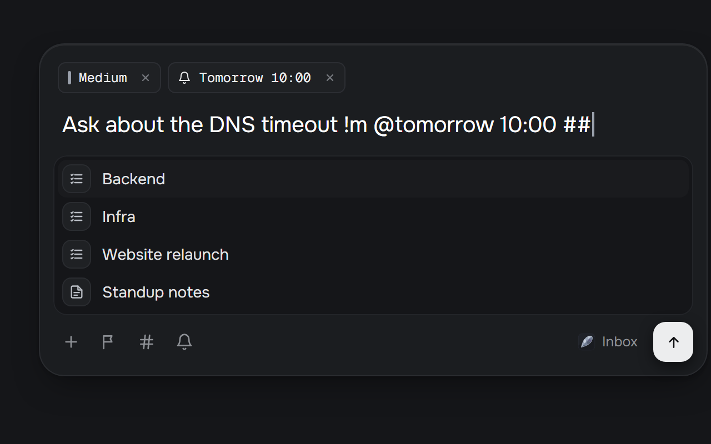
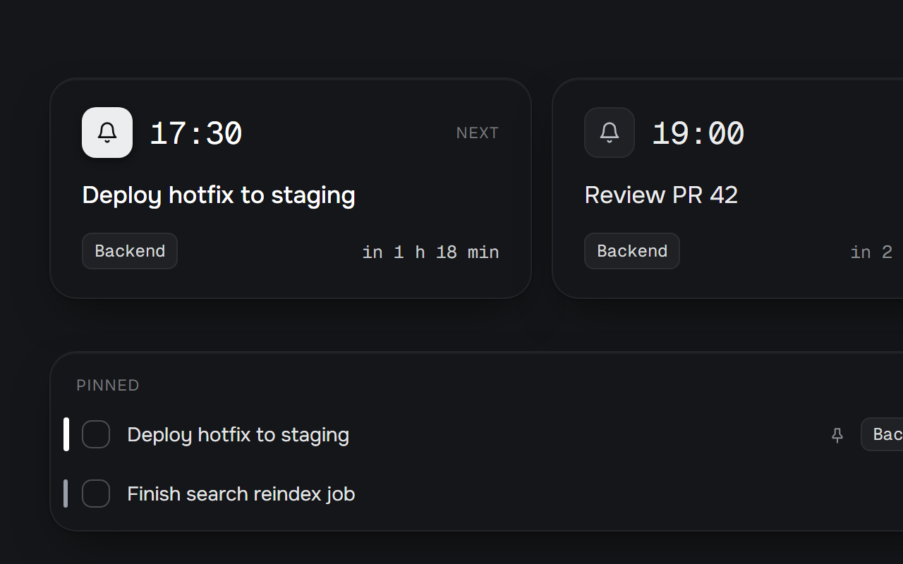
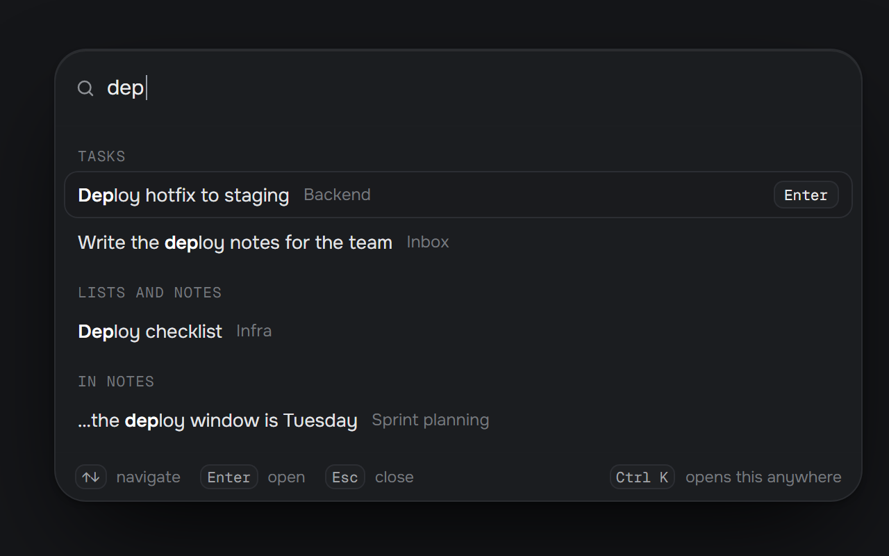
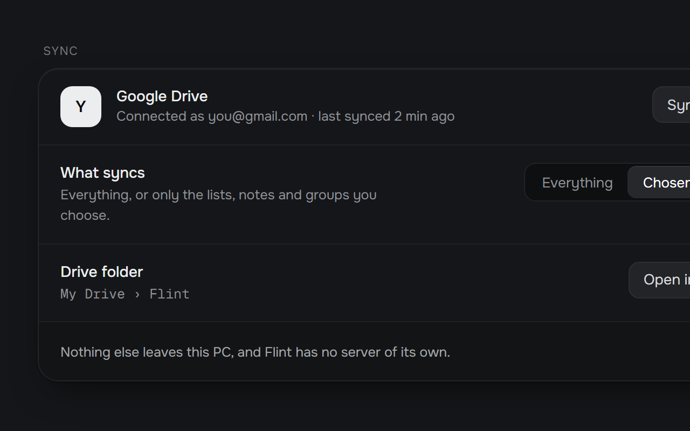

Shorthand, not forms
!h ##backend @15:00 sets the priority, the list and a reminder while you type.

{ Free and open source · Windows }
A keyboard-first notes and task app for developers. Press CtrlShiftSpace from any app, type, press Enter. Back to your call in under three seconds.
Windows 11 · 64-bit

{ Capture }
It's pre-warmed, so the cursor is ready the moment it opens. Type shorthand as you go and it turns into chips; select text anywhere and press CtrlShiftX to capture it, code and stack traces included.
Task lists, notes, Today and Focus, with the side panel beside your work on a wide screen.

{ Plain markdown }
Every list is a .md file that opens in any editor, Obsidian included. No
account, no telemetry, no Flint server. Flint only contacts GitHub to check for
updates, and Google Drive only if you turn on sync, for exactly what you choose.
1---2flint: 13id: unicorn4mode: tasks5---6- [ ] Fix the login redirect loop [priority:: high] [id:: t1]7- [ ] Review Alex's pull request [reminder:: 2026-03-10T15:00]8- [ ] Rotate the Contoso storage keys [pinned:: true]910## Completed11- [x] Ship the hotfix [completion:: 2026-03-10T09:12]
{ What it does }
!h ##backend @15:00 sets the priority, the list and a reminder while you type.

Pin what matters today. Reminders arrive as Windows notifications with Done and Snooze.

Ctrl+K reaches every list, task and command. ? shows every shortcut.

Choose lists and notes to keep in step across your PCs, through a Flint folder in your Google Drive.

A pre-warmed popup opens over any app, even a full-screen call, with the cursor ready.
Lists where every line is a task, and notes with a live preview, tables and code blocks.
A small card on top of everything, hidden from screen sharing. Ctrl+Alt+Space.
Drafts are kept, writes are atomic, deletes go to Trash, and snapshots let you go back.
Hand a task, its notes and subtasks to Claude Code in one step, in the right project folder.
{ How this was made }
Flint was written entirely by Claude Code, Anthropic's AI coding agent. I designed it, made the decisions, and tested every build by hand on my own machine, sending feedback round after round.
The design docs and the full decision log are in the repository.
Free for Windows. Updates itself, quietly, when you quit.
Flint isn't code-signed yet: the first time, Windows may say it protected your PC. Choose More info, then Run anyway.